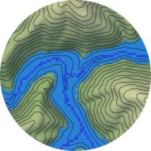
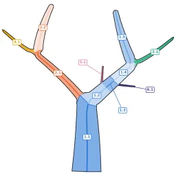
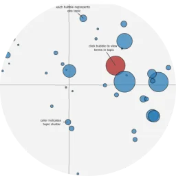
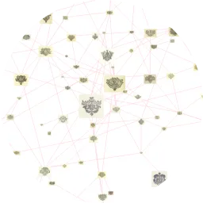
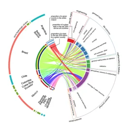
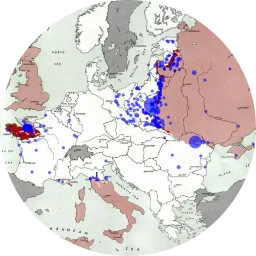
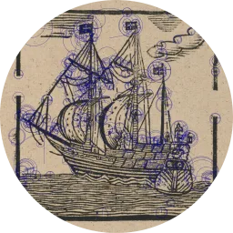

vfmap: valley floor mapping from DEMs
Maps valley floors from DEMs using slope-based region growing and reach-specific flood-fill thresholds.
I am a PhD student in the Hydrologic Sciences program at UC Davis advised by Dr. Greg Pasternack. For my dissertation I study river valley floors. I have developed tools to map them from elevation data across whole regions and to measure their shape. I have used these tools to help manage floodplains and habitat, and to study how natural processes shape river valleys.
Before studying hydrology, I worked as a data scientist at the UC Davis DataLab. At the DataLab I collaborated on interdisciplinary research projects, taught workshops on machine learning topics, and mentored interns. I did my undergraduate studies at UC Davis in history, economics, and computer science.

Maps valley floors from DEMs using slope-based region growing and reach-specific flood-fill thresholds.

Splits branching shapes such as river networks into branches and measures their length and width.

A dynamic corpus explorer for about 60,000 Early Modern English texts from EEBO-TCP.

Getty-supported software that finds similar early modern printed images across library collections.

A machine-learning review of over 20,000 multilingual articles on the region's water research.

Data and maps on about 130,000 men from Alsace and Moselle conscripted into the German Army, 1942–45.

Content-based image retrieval for early modern image sets, used by the English Broadside Ballad Archive.